поехали со мной в выборг?
я тебя люблю и очень хочу провести с тобой целый день в этом городке — с башнями, мостами и крутыми кренделями
смотреть условиядетали поездки
наш маршрут
встреча
встречаемся у метро «площадь ленина», у выходов к финляндскому вокзалу, около 09:05–09:15. в кассе берём билеты
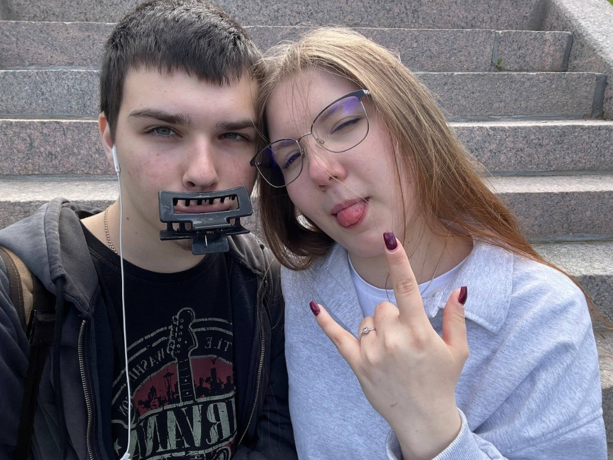
дорога на «ласточке»
выезжаем в 09:20 или 09:30. около часа в пути — и в 10:45 мы на старом выборгском вокзале

старый город и крендели
идём в старый город через парки. заглянем в усадьбу бюргера — каменный дом зажиточного горожанина XVI века, и в пекарню рядом за настоящими выборгскими кренделями
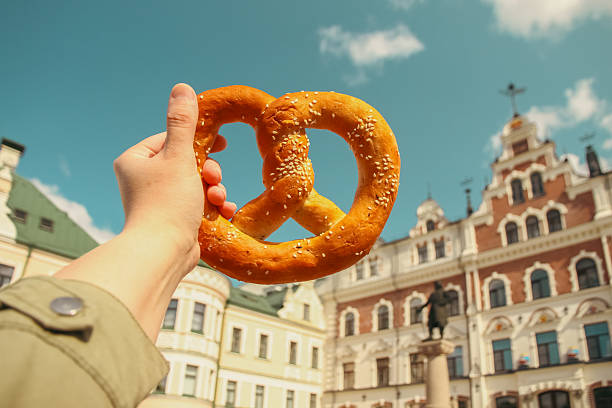
вайб средневековой европы
гуляем у часовой башни и ретро переулков, увидим самый старый жилой дом в россии, ратушную площадь и набережную
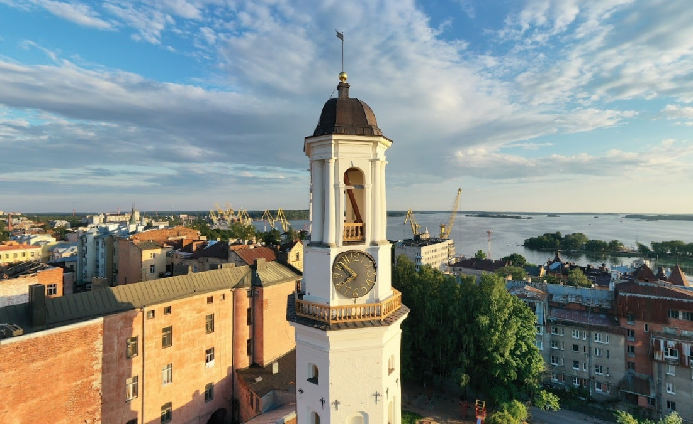
обед
заходим в вафельную или пышечную — гонконгские или венские вафли, пышки, горячий кофе(или успокаивающий чаёк(жаль не от Кирилла, хапхпах)
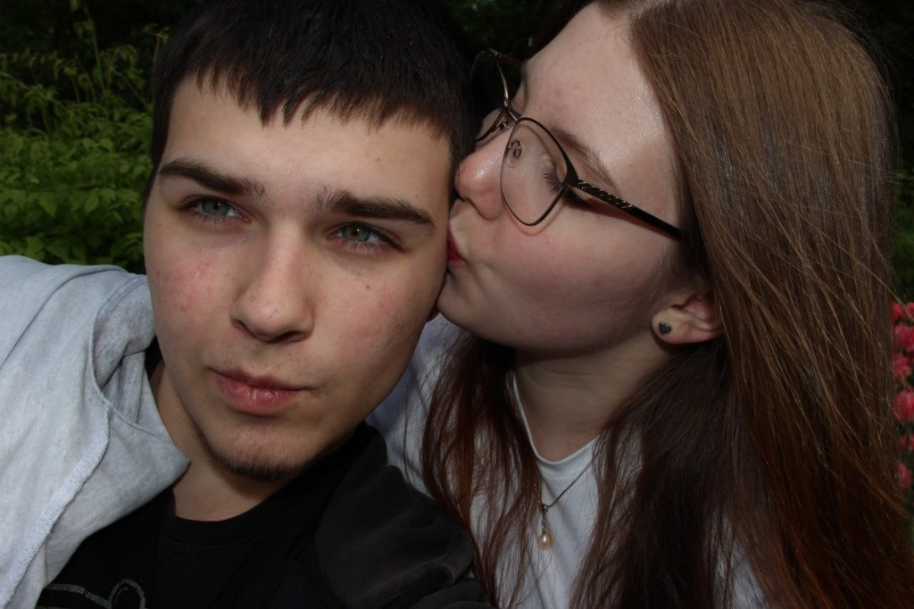
замковый остров
переходим мост на остров выборгского замка, гуляем по двору, смотрим на воду и залив
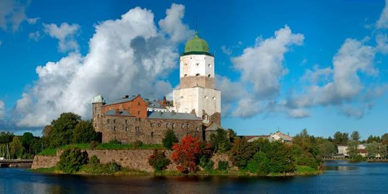
парк монрепо
минут 25 пешком до скального парка (вход бесплатный по пушкинской карте или льготам). устроим маленький пикник среди скал и сосен если возьмём с собой что то
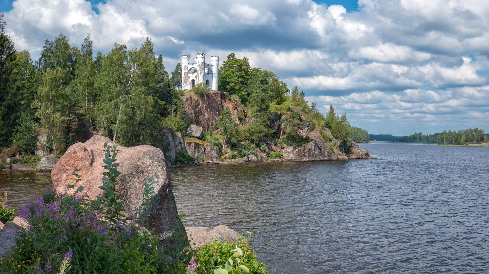
назад к вокзалу
если устанем — у входа в монрепо садимся на автобус (100 рублей), 10 минут — и мы у вокзала
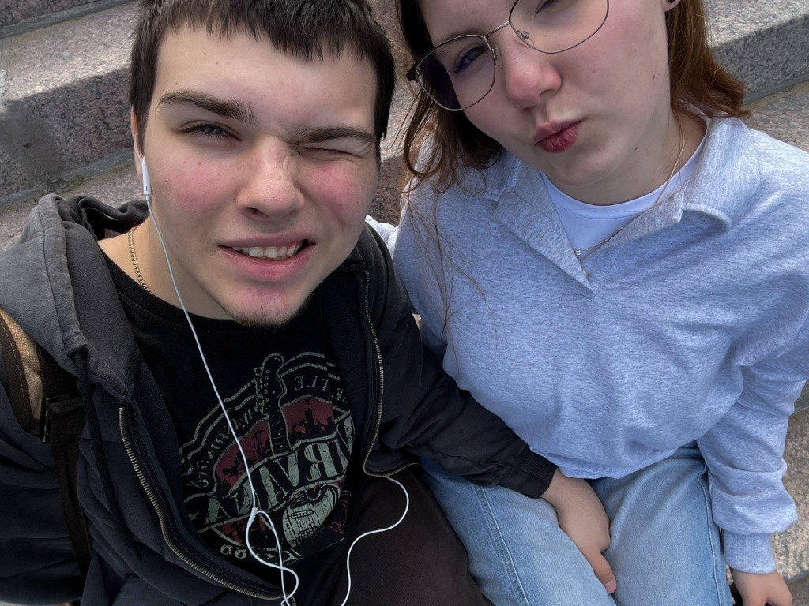
домой
на вечерней «ласточке» (18:20 или 18:46) едем обратно, в питере будем около 19:30–19:50
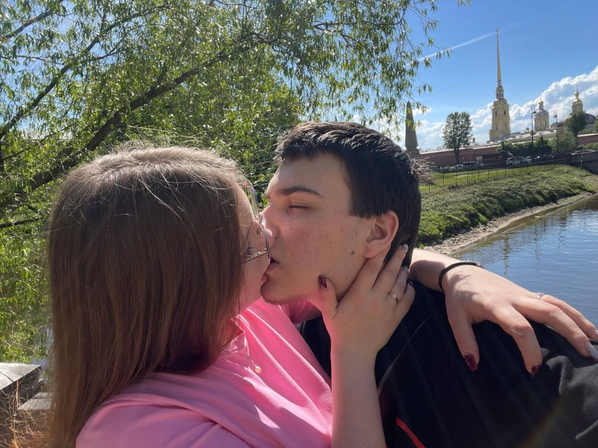
а вот что было бы если мы щас были бы вместе ♡
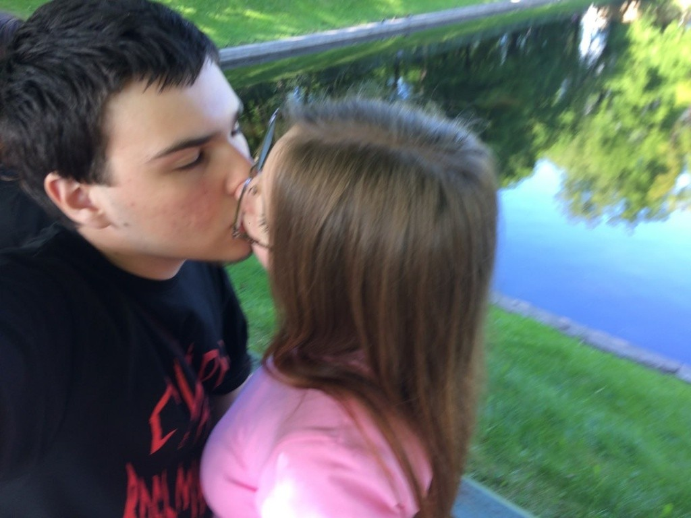
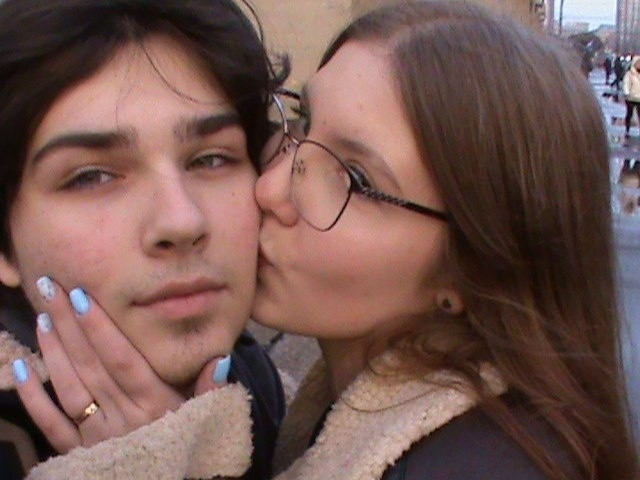
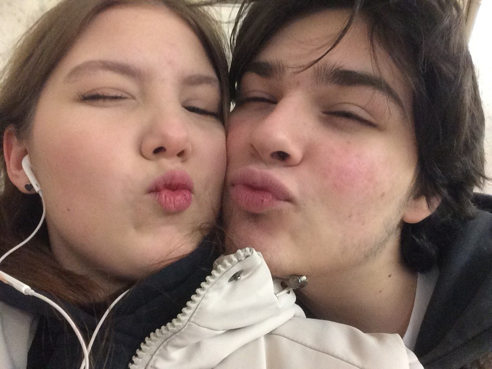
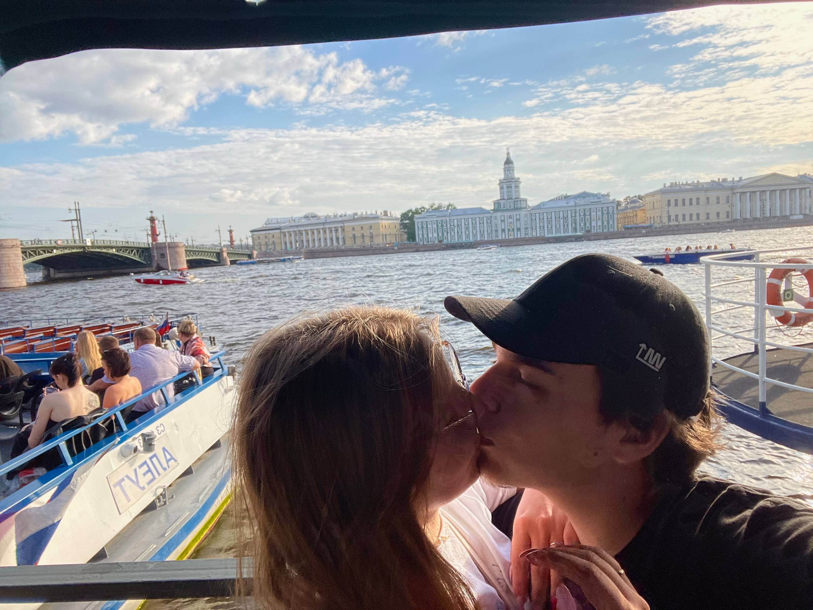